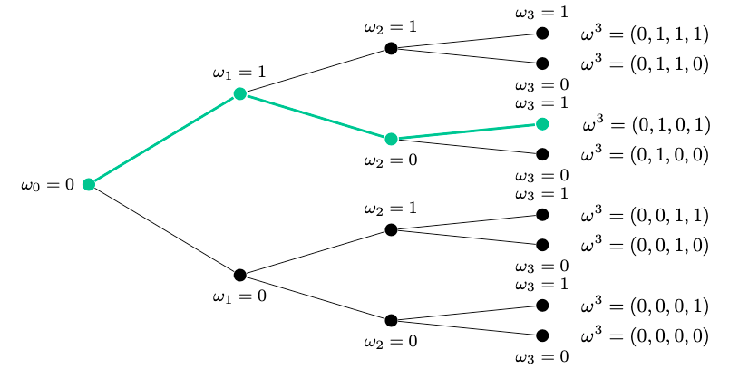

DSE with Complete Markets: Model Setup
\[ \def\w{\omega} \def\R{\mathbb{R}} \]
Setup and Notation
The thing that matters for this part is the following:
- Which notation is used to mean what
- Which is the general model setup
- Summary of the assumptions that are explicitly and implicitly made, including why and with what consequences for generality of the conclusions.
Time and Uncertainty
We use discrete time with infinite horizon (i.e. we sum, rather than integrate, over all possible periods). Using integration sometimes simplifies calculations, but since macro is increasingly computational (and computers work in discrete time) it is useful to be able to reason in this framework.
Rather than uncertainty we focus on risk. The difference between the two is that when we talk about risk we know what are the possible events that might materialize and know their distribution, while this is not the case for uncertainty, which includes some degree of missing information either w.r.t. the possible events, or their distribution.
We model this risk with an exogenous shock \(\omega\).
- \(\omega_t\) is used to indicate the shock that takes place at time \(t\),
- \(\omega^t\) is used to indicate the history of shocks that materialized in all the periods up to time t, including it.
The succession relationship is denoted by \(\omega^{t+1} \succ \omega^t\). At each time \(t\) a history has a unique predecessor, and many possible successors. We restrict the possible successors to be finite meaning at each time the possible shocks that may occur ar of a finite number in nature. This is a simplification to deal only with summations and avoid mixing summations and integrals.

To denote the probability that a history \(\omega^t\) is reached, we use \(\pi(\omega^t)\), which in turn is equal to the sum of the probabilities of all the possible realizations of \(\omega^{t+1}\) such that \(\omega^{t+1}\succ \omega^t\).
This follows from bayes rule, and from the fact that \(\omega^{t+1} = (\omega^t, \omega_{t+1})\).
The exogenous shock \(\w_t\) is then split in two components: + \(z^t\), the aggregate component (affects all individuals in the economy in the same way) + \(s^t\), the idiosyncratic component (affects different agents in different ways)
- Assumption 1
- The idiosyncratic and aggregate components are mutually independent:
\[ \pi(\w^t) = \pi_z(z^t)\pi_s(s^t) \]
This assumption limits the generality of the analysis, and is a big semplification. It excludes that the distribution of the idiosyncratic shocks changes with the aggregate shock (which is often the case in the real world, think of the probability of losing a job during a recession).
- Assumption 2
- We assume that the conditioning restriction holds separately for both the idiosyncratic and the aggregate shocks. This is:
\[ \pi_z(z^t) = \sum_{z^{t+1}\succ z^t} \pi_z(z^{t+1}) \text{ and } \pi_s(s^t) = \sum_{s^{t+1}\succ s^t} \pi_s(s^{t+1}) \]
- Assumption 3
- \(\pi_s(s^t)\) represents at the same time the probability of history \(s^t\) realizing and the cross-sectional share of the population at time \(t\) that experiences \(s^t\).
Note that identifying the probability of a shock happening with the share of people who actually face it is not obvious. The two objects are not the same thing. However, by the law of large numbers, as the population size tends to infinity, the latter object converges to the former.
Preferences and Technologies
- There is a single consumption good, works both as consumption good and as capital.
- \(J\) Classes of households (indexed with \(j = 1, ..., J\))
- Each class is composed by \(\mu_j\) agents
- A von-Neumann Morgenstern utility function describes the preferences towards consumption and leisure for each agent:
\[ \mathcal{U} \left( \{ c_j(\cdot), \ell_j(\cdot) \} \right) = \sum_{t=0}^{\infty} \beta^t \sum_{\omega^t} \pi(\omega^t) \tilde{u}(c_j(\omega^t), \ell_j(\omega^t)) \]
There are a few interesting elements:
- \(\beta\) is the discount factor. It is constant over time over an infinite time horizon. This comes with some assumptions: for example, if we interpret the infinite time horizon as multiple generations of parents caring for their children, we are assuming that all the members of the family care about the future and the life of their heirs in the same way. Moreover, we are assuming no taxation on inheritance.
- \(\pi(w^t)\) is just the probability that each history ralizes, and it is then multiplied by the utility the individual gets, in that history, from consumption and leisure.
- Utility is increasing and concave in both consumption and leisure, and satisfies the Inada conditions: as \(c\) or \(l\) tend to zero, the marginal utility they provide goes to infinity, while as they go to infinity, their marginal utility goes to zero.
Rather than using \(l_j\) for leisure, it is better to use \(n_j = \bar T - l_j\), that is the labor supply. (\(\bar T\) is the total labor endowment).
The inada conditions that describe how utility reacts to labor supply are not the same as for leisure: utility is decreasing and concave in \(n_j\), thus the marginal disutility from an extra hour of work increases with the labor suppy.
\[ \lim_{n\to0}\frac{\partial u(c,n)}{\partial n}=0, \lim_{n\to\overline{T}}\frac{\partial u(c,n)}{\partial n}=-\infty \]
What we are interested in is the aggregate consumption and labor behavior.
Labor Supply
For labor we get:
\[ N(z^t) = \sum_{j=1}^J \mu_j \sum_{s^t} \pi_s(s^t) \theta_j(w^t) n_j(w^t) \]
Interpretation: The first sum just tells that we are considering all types, and for each type we take into account the share of the population of the corresponding type. The second sum is a sum over all the possible idiosyncratic shocks. To understand this we have to recall that: \(\pi(\w^t) = \pi_s(s^t)\pi_z(z^t)\).
The total expected labor supply (not as a function of \(z^t\) as we have it above) is: \[ N = \sum_{j=1}^J \mu_j \sum_{s^t}\sum_{z^t} \pi_s(z^t)\pi_s(s^t) \theta_j(w^t) n_j(w^t) \]
But since we have assumed that the shock \(z^t\) is the same for all the type of households and is independent from the idiosyncratic shock, we can rewrite as:
\[ \begin{align*} N & = \sum_{z^t} \pi_s(z^t) N(z^t)\\ & = \sum_{z^t} \pi_z(z^t) \sum_{j=1}^J \mu_j \sum_{s^t} \pi_s(s^t) \theta_j(w^t) n_j(w^t) \end{align*} \]
Hence we geth that the equation we have above, is just the labor supply when written as a function of the aggregate shock. This is useful because it allows to analyze the effect of economy-wide shocks.
\(\theta_j(\w^t)\) is our way of implementing heterogeneity in the model. This heterogeneity is modelled as a type and history contingent shock to labor productivity (e.g. type \(k\) does not produce when it rains (\(z^t\)) or their dog is sick (\(s^t\))).
It is very important to notice that the heterogeneity is inserted only in the labor supply function, and not in the consumption function (for example) this will have consequences relating why the various agents behave in the same way with respect to some things and in different ways with respect to others.
Consumption
Aggregate consumption is
\[ C(z^t) = \sum_{j=1}^J \mu_j \sum_{s^t} \pi_s(s^t) c_j(w^t) \]
This is a function of the aggregate shock exactly for the same reason why the labor supply is.
Actually, the consumption function here is allowed to be different for the various types of agents (there is a \(j\) index under \(c(w^t)\)). Think about this later, when solving the central planner problem.
Production Technology
The final production good is produced using constant returns to scale (note that this si a pretty strong assumption).
The Neo-classical production function used is:
\[ A(z^t) F(K(z^{t-1}), N(z^t)) \]
Where \(F(\cdot, \cdot)\) is increasing and concave in its arguments, satisfying usual Inada conditions (as K or N go to zero their marginal product goes to infinity and vice versa).
The decision for capital available at time \(t\) is taken at \(t-1\). This is why, in the production function \(K\) is a function of \(z_{t-1}\). A stark consequence is that there are intertemporal decision to be taken, thus we will have an intertemporal optimization problem to solve.
\(A(z_t)\) is the aggregate TFP (Total Factor Productivity) which is exogenously determined. An increase in A means that the same amount of labor and capital can now produce higher output.
This is a weakness of the model: we have to instert something that will trigger a business cycle exogenously, because we are not able to have and endogenizeable explanation for this kind of shocks.
The evolution of the capital stock follows the law of permanent inventory: \[ K(z^t)-K(z^{t-1})=I(z^t)-\delta K(z^{t-1}) \] Which means that the change in capital is equal to the additional investments made at time \(t\) minus the amount of capital lost to depreciation.
Here we make a big assumption that the depreciation rate is constant. There has been a big debate (Cambridge Capital Controversy) on wether aggregate capital actually exists. The neoclassical theory (that is the one that we end up following in this course) agrees that it is possible to define aggregate capital, and thus have a unique depreciation rate.
In using a constant \(\delta\) we are making a trade off as we are assuming that in each period we consume the capital by the same amount. + This is ok if we are interested in the long run: on average we consume the capital by the same amount each year, thus it does not really matter if one year is a bit more and another a bit less. The semplification helps a lot. + This is not ok if we are interested in the short run: in years of economic boom production is higher, so capital is used more, and thus is reasonable that it gets consumed more. The fact that during booms capital is consumed more than during recessions should not be neglected, because some relevant dynamics can arise from this.
Terminology: \(I(z^t)\) is the gross investment, while \(I(z^t) - \delta K(z^{t-1})\) is the net investment.
Feasibility
Feasibility is the consraint by which the total amount consumed and the total amount invested must be lower than the total output of the economy.
\[ C(z^t) + I(z^t) \leq A(z^t) F(K(z^{t-1}), N(z^t)) \]
Sum up of the restrictions
Shocks can affect only labor and aggregate productivity (\(\theta\) and \(A\)). This excludes shocks to preferences, endowments, depreciation, etc. They are implemented in extensions of the model.
The economy has a single sector. One good is produced and consumed, this same good is effortlessly converted into capital.
There is one single aggregate production function, but potentially it is possible to extend this model to look better into the dynamics of the production side of the economy.
The Central Planner Problem
\[ \mathcal{U} \left( \left( c_j(\cdot), n_j(\cdot) \right)_{j=1}^J \right) = \sum_{j=1}^{J} \psi_j \sum_{t=0}^{\infty} \sum_{\omega^t} \beta^t \pi(\omega^t) u \left( c_j(\omega^t), n_j(\omega^t) \right) \]
- \(\psi_j\) is the weight that the planner gives to the various groups. These can be all ones (utilitarian function) or different values, to embed different welfare functions.
\[ N(z^t) = \sum_{j=1}^J \mu_j \sum_{s^t} \pi_s(s^t) \theta_j(w^t) n_j(w^t) \]